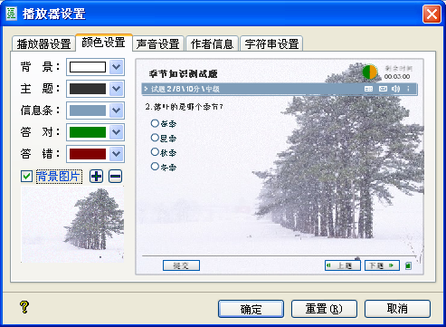

| 播放器 - 颜色设置 |
|
颜色设置页面如下图所示：  您可以在这里自定义播放器的背景色、主题、工具条等颜色，也可以设定播放器的背景图片，它将在您出的试题中显示。对您所做的设置，在播放器区域会实时预览。 背景：此处设置播放器的背景色，默认为白色。 主题：您可以设置试题标题的颜色。 工具条：这里设置信息条的颜色。 答对：您在试题属性->试题设置的[答案提交模式]为[一次提交一题]设置下，若题之反馈信息可用，则做对时，其信息条对应信息为此处设置颜色；在试题列表中，做对的题目亦显示此处设定颜色；最后的结果显示页面，若测试者通过测试，则信息条及结果信息也显示此处设定颜色。 答错：与[答对]所对应的功能相反，若题答错，或测试者未过过测试，则以此颜色标识。 背景图片：您可以在这里设置试题的背景图片，它将会自动适应播放器区域的大小。若您选定的图片不是4:3比例的，它会居中显示，其它地方以[背景]色填充。 |